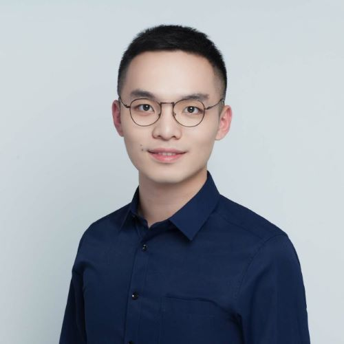

Yiming WangGraduate Student Renmin University of China ymwang54@outlook.com |
 |
Biography
I am a graduate student in Prof. Rong Yu's theoretical condensed matter group, department of physics, Renmin University of China. I mainly study quantum phase transitions in iron-based superconductors by employing analytical techniques such as Feynman diagrams, renormalization group and large-N or other mean-field-like theory.
Research Interests & Skills
Interests: Theoretical quantum many-body physics. Quantum phase transition. Quantum magnetism. Quantum criticality. High-Tc Superconductivity. Non-equilibrium quantum dynamics.
Skills: Applications of analytical techniques, Mathematica, Matlab.
Educational Background
2017-present
M.S in Theoretical Physics
Renmin University of China
Overall GPA: 3.71/4.00
Integrated Ranking: 1/22
2013-2017
B.S in Physics
Hebei University
Overall GPA 4.15/5.00
Integrated Ranking: 2/37
Publications
Y. Wang, W. Hu, R. Yu, and Q. Si, Broken mirror symmetry, incommensurate spin correlations, and B2g nematic order in iron pnictides, Phys. Rev. B 100, 100502(R)(2019)
Research Experience
Analytically studied an effective model that describes the magnetic phases and the symmetry-related emergent phases induced by magnetic fluctuations in iron-based superconductors using renormalization group and large-N mean field theory. (to be submitted in one month)
Constructed a general Ginzburg-Landau theory that links the nematic order to spatial pattern of magnetic fluctuations. And explained the observed quasi-degeneracy between B1g and B2g nematic fluctuations in iron-based superconductors. (published in PRB(R))
Explained the observed phonon softening across the nematic transition in iron-based superconductors. (to be submitted)
Awards
2019 National Scholarship for Graduate Students
2018 Excellent Students Awards at Renmin University of China
2016 Excellent Students Awards at Hebei University
2015 & 2016 First Prize for Outstanding Student Stipend at Hebei university
2015 First Prize for The Seventh Chinese Mathematics Competitions (Non-Mathematics)
2014 First Prize for The Sixth Chinese Mathematics Competitions (Non-Mathematics)
Talks & Posters
"Theoretical Understanding of Novel Nematicity in Iron-based SCs", talks presented at 2019 Beijing Summer School on Quantum Magnetism
”Theoretical study on the Phonon Softening in Iron-based Superconductors”, posters presented at the conference M2S-2018
Teaching Experience
2018 Fall Group Theory
2017 Fall Mechanis